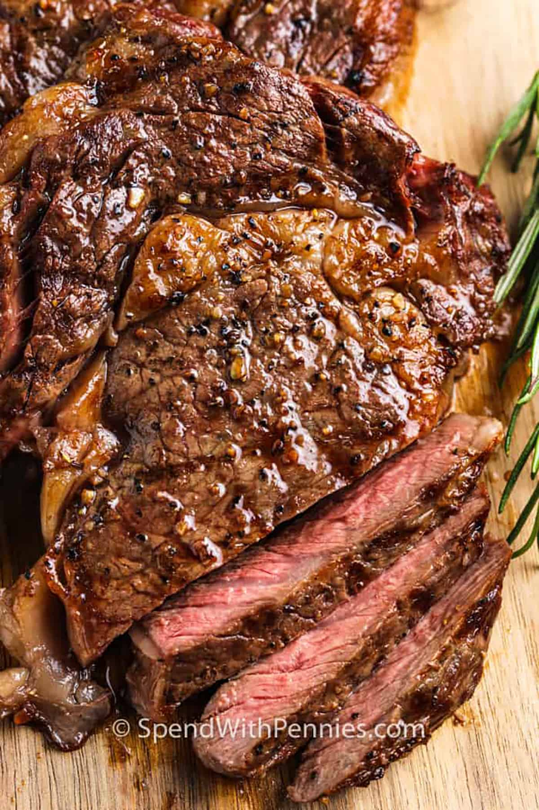

Home
Steak

Description
The above picture contains a picture of a finished ribeye steak
Ingrdients
- 12oz ribeye steak
- Seasonings
- Butter
- Oil
Steps
- Pat steak dry with paper towels to absorb all the moisture
- Put a 10 inch skillet on stovetop and pour oil into pan
- Season steak with salt and pepper on both sides
- Add steak to pan once pan is smoking a bit
- Let each side cook for 2 minutes before flipping it
- After a flip on each side, bring heat to low and add butter
- Once butter is browning, bring heat back to medium and start butter basting
- After another 2 minutes, flip steak again, and baste the other side as well
- Once the internal temp of the steak is 120 degrees, remove steak and place on cutting board
- Let steak rest for 10 minutes before cutting in to allow it to cook fully
- Cut it, plate, and serve